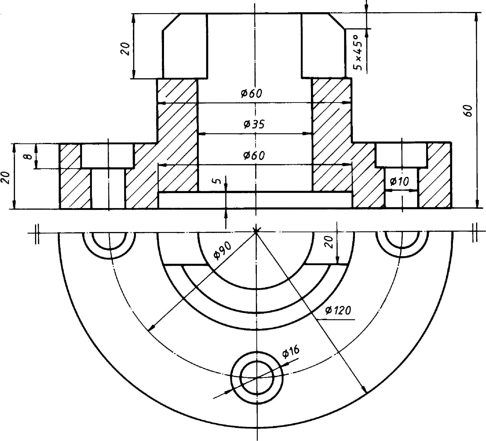

6. Metszeti ábrázolás 6.2.1. Az egyszerű metszetek fajtái Az egyszerű metszetek képzéséhez a munkadarabot egy metszősíkkal vágjuk el. Ha a munkadarab szimmetrikus, a metszősík a szimmetriatengelyén halad keresztül. Ha a metszősíkkal átmetszhető felület egészét megrajzoljuk, teljes metszetről beszélünk. A metszetben rajzolt vetület kerülhet az - elölnézet helyére (110. ábra), - az oldatnézet helyére (111. ábra) és a - felülnézet helyére (112. ábra). Ezekben az esetekben a metszősíkot nem jelöljük és nem azonosítjuk. Ha a munkadarab a metszősík nyomvonalára nem szimmetrikus akkor a metszősíkot vastag végű, vékony pontvonallal és azonosító betűjelzéssel látjuk el (113. ábra). Az ábrán, szemléltető képével is megadott munkadarab elölnézete és felülnézete is a jelölt metszősíkok által képzett metszeti vetület. Szemléltető kép 113. ábra 112. ábra 32
